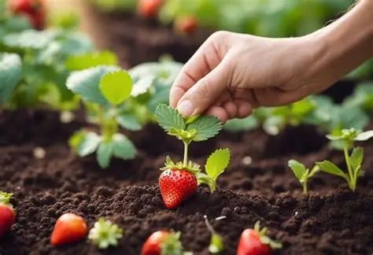
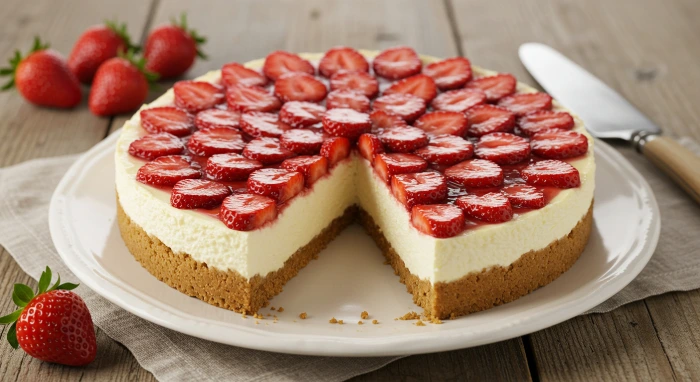
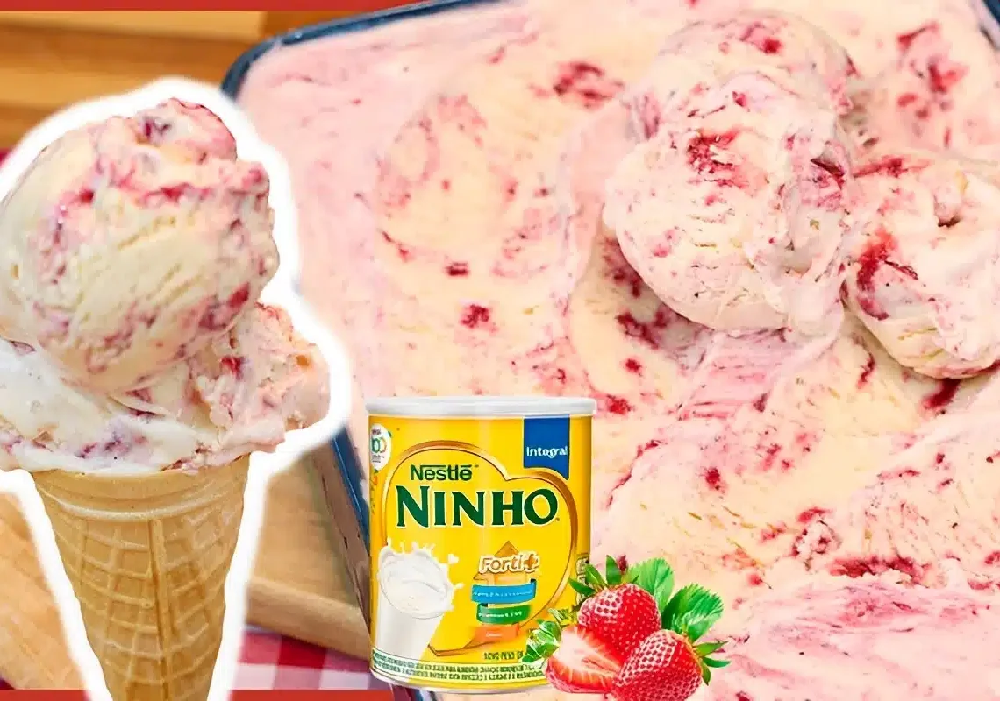

O morango é originário da Europa e típico de países de clima frio. Assim como a maçã, o pêssego e a cereja, o morango pertence à família das rosáceas.
Na era romana, era valorizado por suas propriedades terapêuticas e usado para tratamento de praticamente todos os tipos de doenças. Começaram a ser cultivados
em maior escala no século XIII. O jardineiro de Luis XIV cultivava morangos em Versalhes.
Seu cultivo foi evoluindo ao longo dos anos e passou a ser popular no século 18 quando mais de 600 espécies foram desenvolvidas.
Plantio 🌱🍓⋆.°
O plantio de morango exige escolha adequada da variedade, preparo do solo, irrigação regular e cuidados contínuos
para garantir frutos saudáveis e saborosos.
Escolha da Variedade ⊹ ࣪ ˖
Para cultivo doméstico ou comercial, escolha variedades adaptadas ao clima da sua região. No Brasil, algumas recomendadas incluem: ‘Oso Grande’
(frutos grandes e doces), ‘Camino Real’ (alta produtividade e tolerância ao calor), ‘San Andreas’ (ideal para vasos) e ‘Albion’ (resistente a doenças fúngicas e calor).
Variedades remontantes permitem colheitas prolongadas ao longo do ano. Novas cultivares, como o Morango Fênix, destacam-se por precocidade e doçura.
Preparo do Solo e Local de Plantio ⊹ ࣪ ˖
O morangueiro prefere sol pleno e solo leve, bem drenado e rico
em matéria orgânica. Para canteiros, recomenda-se altura de 20 a 30 cm, largura de cerca de 1 metro e espaçamento de 30 a 40 cm entre mudas. Evite encharcamento, pois a planta
não tolera excesso de água. Em vasos, utilize substrato de qualidade e adubação orgânica para nutrir adequadamente as plantas.
Propagação ⊹ ࣪ ˖
O morangueiro se multiplica principalmente por estolões, ramos rasteiros
que emitem novas mudas. As mudas podem ser separadas quando tiverem 3 a 5 folhas, e as raízes devem ser protegidas com panos úmidos se estiverem expostas.
A propagação por sementes é menos comum, pois demora mais para frutificar e pode não preservar as características da planta-mãe.
Colheita ⊹ ࣪ ˖
Os frutos devem ser colhidos quando estiverem totalmente vermelhos e maduros, garantindo sabor e valor nutricional máximos.
O ciclo produtivo das plantas varia de 8 meses a 2 anos, dependendo da variedade e manejo.
Seguindo essas orientações, é possível cultivar morangos em vasos, jardineiras ou canteiros, obtendo frutos frescos, saborosos e livres de
agrotóxicos, mesmo em espaços pequenos.

Época 🍓⋆.°
A época do morango no Brasil geralmente ocorre entre setembro e dezembro, com a maior abundância da
fruta nos meses de agosto, setembro e outubro.
Detalhes sobre a Safra do Morango
Meses de Colheita: A safra do morango varia conforme a região e o clima. Em geral,
os meses de setembro a dezembro são os mais comuns para a colheita, sendo que a produção é mais intensa entre agosto e outubro.
Cultivo em Estufas: Embora a safra principal ocorra no final do ano, muitos produtores utilizam técnicas de cultivo em estufas, permitindo que morangos
sejam encontrados durante todo o ano. No entanto, os morangos colhidos na época da safra tendem a ter melhor qualidade e sabor.
Regiões e Climas: Em regiões mais quentes, a colheita pode ocorrer de abril a outubro, enquanto em regiões mais frias, como o Sul do Brasil,
a safra pode se estender até dezembro. Isso se deve às diferenças nas condições climáticas que afetam o crescimento e a maturação dos morangos.
Floração 🍓⋆.°
A floração do morango é um processo crucial para a produção de frutos. Para estimular a floração e frutificação dos morangueiros orgânicos,
as temperaturas devem se manter entre 13°C e 26°C. A planta requer luz direta do sol e não tolera ventos nem chuvas fortes ou geadas. O solo deve ser arenoso-argiloso e bem drenado
com um pH ligeiramente ácido. A aplicação de fertilizantes minerais mistos, à base de aminoácidos, com teores equilibrados de CaB (cálcio e boro) e com ação
bioestimulante é fundamental para o florescimento e "pegamento" de frutos.
Germinação do morango em vídeo 📹⋆.°
Espécies 🍓⋆.°
₊˚⊹♡ Principais espécies de morango ♡⊹˚₊
Fragaria vesca
Morango silvestre europeu, menor, aromático e doce, ideal para consumo fresco e sobremesas delicadas.
Fragaria virginiana
Nativa da América do Norte, apresenta frutos pequenos e sabor levemente ácido, resistente a diferentes climas.
Fragaria chiloensis
Originária do Chile, com frutos grandes e saborosos, contribuiu para a criação de híbridos modernos.
Fragaria x ananassa
Híbrido mais cultivado mundialmente, resultado do cruzamento entre F. chiloensis e F. virginiana, com frutos grandes,
vermelhos e suculentos, adaptado a cultivo comercial.
Composição nutricional 💪🍓⋆.°
O morango é uma fruta de baixo valor calórico, rica em vitamina C,
fibras, potássio, ferro e antioxidantes, oferecendo diversos benefícios à saúde.
Composição nutricional (por 100g de morango) ⊹ ࣪ ˖
Calorias: aproximadamente 32 kcal
Carboidratos: cerca de 7,7 g, dos quais 2 g são fibras
Proteínas: 0,7 g
Gorduras: 0,3 g, sendo quase todas insaturadas
Fibras: 2 g, auxiliando na saciedade e no controle da glicemia
Vitamina C: 59 mg, importante antioxidante que fortalece o sistema imunológico e auxilia na absorção de ferro
Ácido fólico: 24 µg, essencial para a formação de células e prevenção de defeitos congênitos
Potássio: 153 mg, contribui para a regulação da pressão arterial
Ferro: 0,4 mg, importante para a produção de hemoglobina
Compostos bioativos e antioxidantes: antocianinas, flavonoides e polifenóis, que ajudam a reduzir inflamações
e proteger contra doenças cardiovasculares e alguns tipos de câncer
Benefícios à saúde 🧑⚕️🍓⋆.°
Fortalecimento do sistema imunológico devido à vitamina C e antioxidantes
Controle do colesterol e saúde cardiovascular, auxiliado por fibras solúveis e polifenóis
Ação anti-inflamatória e proteção contra estresse oxidativo
Auxílio na perda de peso e controle da glicemia, por ser pouco calórico e rico em fibras
Melhoria da função cognitiva e prevenção de doenças neurodegenerativas
Receitas que podem ser feitas com o morango️ 🍓⋆.°
Cheesecake de morango 𐙚 ˚🍰 ⋆｡˚ ᡣ𐭩
Ingredientes 🍓🧀⋆.°
1 pacote de bolacha de maisena
3 colheres de sopa de manteiga derretida
300 gramas de cream cheese
1 caixa de creme de leite sem soro (200 gramas)
1 lata de leite condensado (395 gramas)
1 envelope de gelatina sem sabor (10 gramas)
1 xícara de chá mais o suficiente para hidratar a gelatina de água
5 colheres de sopa de açúcar
400 gramas de morangos picados
Morangos para decorar
Modo de preparo 🥣🍰⋆.°
Base de bolacha 🧈⋆.°
Triture as bolachas no processador até virar uma farinha fina.
Adicione a manteiga derretida e misture até formar uma farofa úmida.
Forre o fundo de uma forma redonda com fundo removível.
Pressione bem com os dedos para compactar.
Leve ao forno preaquecido a 180 °C por cerca de 10 minutos.
Retire e deixe esfriar.
Recheio do cheesecake 🧀⋆.°
Na batedeira, coloque o cream cheese, o creme de leite e o leite condensado.
Bata até obter um creme liso e homogêneo.
Hidrate a gelatina com água.
Leve ao micro-ondas por cerca de 30 segundos para dissolver.
Com a batedeira ligada, adicione a gelatina ao creme.
Bata até incorporar completamente.
Montagem e gelificação ❄️⋆.°
Despeje o recheio sobre a base já fria.
Leve à geladeira por no mínimo 5 horas, ou até ficar bem firme.
Calda de morango 🍓⋆.°
Em uma panela, coloque a água, o açúcar e os morangos.
Leve ao fogo médio, mexendo sempre.
Cozinhe até reduzir e formar uma calda mais grossa.
Desligue o fogo e deixe esfriar.
Finalização 🍰⋆.°
Após o tempo de geladeira, desenforme a cheesecake.
Espalhe a calda de morango por cima.
Decore com morangos frescos.
Sirva bem gelada.

Bom apetite! ૮₍ ˶ᵔ ᵕ ᵔ˶ ₎ა
Sorvete de ninho com morango 𐙚 ˚🍨 ⋆｡˚ ᡣ𐭩
Ingredientes 🍓🥛⋆.°
350ml de leite
1 colher de chá de liga neutra
1 colher de chá de emulsificante
1 caixinha de leite condensado
1 lata de creme de leite
100g de leite em pó
Ingredientes para a geléia de morango🍓⋆.°
200g de morangos
1 xícara de açúcar
Modo de preparo 🥣🍨⋆.°
Geleia de morango 🍓⋆.°
Lave bem os morangos e corte em pedaços pequenos.
Coloque os morangos em uma panela com o açúcar.
Leve ao fogo médio, mexendo de vez em quando.
Cozinhe até formar uma calda mais espessa (tipo geleia).
Desligue o fogo e deixe esfriar completamente.
Base do sorvete de Ninho 🍦⋆.°
No liquidificador, adicione o leite, o leite condensado, o creme de leite e o leite em pó.
Bata por cerca de 2 a 3 minutos até ficar bem homogêneo.
Acrescente a liga neutra e bata por mais 1 minuto.
Leve essa mistura ao freezer por aproximadamente 3 a 4 horas, ou até começar a ficar firme (não totalmente congelado).
Finalização ❄️⋆.°
Retire a base do freezer e coloque novamente no liquidificador.
Adicione o emulsificante
Bata por 5 a 10 minutos, até dobrar de volume e ficar bem cremoso.
Em um recipiente, faça camadas de sorvete e geleia de morango.
Leve ao freezer por pelo menos 6 horas ou até firmar bem.

Bom apetite! ૮₍ ˶ᵔ ᵕ ᵔ˶ ₎ა
Bombom de morango com chocolate 𐙚 ˚🍬 ⋆｡˚ ᡣ𐭩
Ingredientes 🍓🍫⋆.°
1 caixinha de leite condensado
1 colher de sopa de margarina ou manteiga
1 caixinha de creme de leite
1 a 2 caixinhas de morangos
350g de cobertura fracionada sabor chocolate ao leite
(*meio amargo ou de sua preferência)
Modo de preparo 🥣🍨⋆.°
Brigadeiro branco 🥛⋆.°
Em uma panela, coloque o leite condensado e a manteiga (ou margarina).
Leve ao fogo médio, mexendo sempre.
Cozinhe até começar a engrossar levemente (não precisa chegar ao ponto firme de enrolar).
Desligue o fogo e acrescente o creme de leite.
Misture bem até formar um creme liso e mais mole.
Deixe esfriar completamente.
Preparação dos morangos 🍓⋆.°
Lave bem os morangos.
Retire as folhas (cabinhos).
Seque bem com papel toalha (isso é importante para não soltar água no doce).
Montagem dos bombons 🍬⋆.°
Pegue porções do brigadeiro já frio.
Envolva cada morango com o brigadeiro, cobrindo totalmente.
Modele delicadamente com as mãos, formando uma camada uniforme.
Coloque os bombons em uma forma ou prato.
Leve à geladeira por cerca de 20 a 30 minutos para firmar.
Cobertura de chocolate 🍫⋆.°
Derreta a cobertura fracionada conforme as instruções da embalagem (micro-ondas ou banho-maria).
Mexa bem até ficar totalmente lisa.
Finalização 🍬⋆.°
Retire os bombons da geladeira.
Banhe cada um no chocolate derretido.
Coloque sobre papel manteiga ou uma forma untada.
Deixe o chocolate endurecer completamente (em temperatura ambiente ou geladeira).